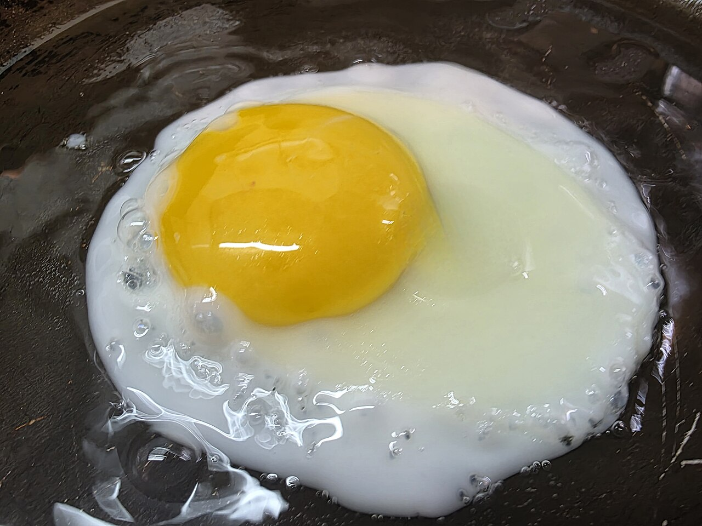

蛋白质是生命活动的主要承担者
本期导读
氨基酸 · 脱水缩合 · 相关计算 · 变性

视频原话 · 导读3 句
- 同学们好！这节课梳理人教版必修一第二章第四节——蛋白质是生命活动的主要承担者。8.5s
- 高考常考氨基酸的结构通式、脱水缩合的相关计算，以及蛋白质的变性。7.1s
- 我们按八个考点梳理，每个考点都讲清楚怎么考、怎么做。5.5s
蛋白质的功能01#
蛋白质是生命活动的主要承担者
结构
羽毛、肌肉、头发、蛛丝
催化
绝大多数酶
运输
血红蛋白运输氧气
调节
胰岛素等蛋白质类激素
免疫
抗体抵御抗原
易错
激素不都是蛋白质（性激素是固醇）；酶不都是蛋白质（少数是 RNA）
视频原话5 句
- 考点一，蛋白质的功能。一切生命活动都离不开蛋白质，蛋白质是生命活动的主要承担者。9.0s
- 结构蛋白：构成细胞和生物体，如羽毛、肌肉、头发；催化：绝大多数酶是蛋白质。8.7s
- 运输：血红蛋白运输氧气；信息传递和调节：如胰岛素调节血糖。7.1s
- 免疫：抗体可以帮助人体抵御病菌和病毒等抗原的侵害。5.8s
- 易错：激素不都是蛋白质，性激素是固醇；酶也不都是蛋白质，少数是RNA。7.9s
氨基酸结构通式02#
- 至少含有一个氨基（—NH2）和一个羧基（—COOH）
- 氨基和羧基连在同一个碳原子上，该碳还连一个 H 和一个 R 基
- 氨基酸的种类由R 基决定
解题方法
判断是否为组成蛋白质的氨基酸：看同一个碳上是否既有氨基又有羧基
视频原话4 句
- 考点二，氨基酸的结构。每种氨基酸分子至少都含有一个氨基和一个羧基。7.3s
- 并且都有一个氨基和一个羧基连接在同一个碳原子上，这个碳原子还连着一个氢原子和一个侧链基团，叫R基。10.1s
- 各种氨基酸之间的区别，在于R基的不同。4.2s
- 解题方法：判断是不是组成蛋白质的氨基酸，看同一个碳上，是否既有氨基又有羧基。8.4s
必需与非必需03#
必需氨基酸 8 种
人体细胞不能合成，必须从外界环境中获取
非必需氨基酸 13 种
人体细胞能够合成
口诀：甲 携 来 一 本 亮 色 书
甲硫氨酸、缬氨酸、赖氨酸、异亮氨酸、苯丙氨酸、亮氨酸、色氨酸、苏氨酸
解题方法
评价食物营养价值：看必需氨基酸的种类和含量（如玉米等谷类蛋白质缺少赖氨酸）
视频原话5 句
- 考点三，组成人体蛋白质的氨基酸有21种。4.9s
- 其中8种是人体细胞不能合成的，必须从外界环境中获取，叫必需氨基酸。7.3s
- 另外13种人体细胞能够合成，叫非必需氨基酸。4.9s
- 必需氨基酸可以用口诀记：“甲携来一本亮色书”——甲硫氨酸、缬氨酸、赖氨酸、异亮氨酸、苯丙氨酸、亮氨酸、色氨酸、苏氨酸。12.5s
- 考法：评价食物的营养价值。解题方法：看必需氨基酸的种类和含量，比如玉米等谷类蛋白质缺少赖氨酸。10.7s
脱水缩合与肽键04#
易错
水中的 H 来自氨基和羧基，O 来自羧基；脱水缩合的场所是核糖体
视频原话3 句
- 考点四，脱水缩合。一个氨基酸的羧基和另一个氨基酸的氨基相连接，同时脱去一分子水。9.0s
- 连接两个氨基酸的化学键叫肽键。两个氨基酸形成二肽，多个氨基酸形成多肽，多肽通常呈链状，叫肽链。10.7s
- 易错：脱去的水中，H来自氨基和羧基，O来自羧基；脱水缩合的场所是核糖体。8.4s
肽键与分子量计算05#
- 1链状肽键数 ＝ 脱去水分子数 ＝ n − m（n 个氨基酸，m 条肽链）
- 2环状肽键数 ＝ 脱去水分子数 ＝ n
- 3分子量蛋白质相对分子质量 ＝ n × a − (n − m) × 18（a 为氨基酸平均相对分子质量）
例：n ＝ 100，m ＝ 2，a ＝ 128 → 100 × 128 − 98 × 18 ＝ 11036
易错
减的是脱去的水分子数（98），不是氨基酸数；每形成一个二硫键再减 2
视频原话5 句
- 考点五，肽键数和相对分子质量的计算。n个氨基酸形成m条肽链：肽键数 = 脱去的水分子数 = n − m。11.2s
- 如果形成的是环状肽，肽键数就等于氨基酸数n。4.9s
- 蛋白质的相对分子质量 = 氨基酸数 × 平均相对分子质量 − 脱去水分子数 × 18。8.8s
- 例：100个氨基酸形成2条肽链，平均相对分子质量是128，那么蛋白质的相对分子质量是11036。11.5s
- 易错：减的是脱去的水分子数98，不是100；如果有二硫键，每形成一个还要再减去2。8.8s
氨基羧基与原子数06#
- 1每条链两端各有 1 个游离的氨基和羧基
- 2m 条链至少 m 个游离氨基、m 个游离羧基
- 1N 原子数＝ 肽键数 ＋ 肽链数 ＋ R 基中的 N
- 2O 原子数＝ 肽键数 ＋ 2 × 肽链数 ＋ R 基中的 O
解题方法
数“肽键 ＋ 链端 ＋ R 基”：每个肽键 1 个 N、1 个 O；每条链末端多 1 个 N、2 个 O
视频原话5 句
- 考点六，游离的氨基、羧基和原子数的计算。每条肽链的两端，各有一个游离的氨基和一个游离的羧基。10.1s
- 所以m条肽链，至少含有m个游离的氨基和m个游离的羧基；R基中的氨基和羧基要另外加上。9.2s
- N原子数 = 肽键数 + 肽链数 + R基中的N原子数。6.0s
- O原子数 = 肽键数 + 2 × 肽链数 + R基中的O原子数。6.4s
- 解题方法：数“肽键 + 链端 + R基”——每个肽键含1个N、1个O，每条链的末端多1个N、2个O。9.4s
结构多样性07#
氨基酸种类不同
氨基酸数目不同
排列顺序不同
空间结构不同
结构多样性 → 功能多样性：结构与功能相适应
易错
脱水缩合的方式都相同，肽键结构也相同，不是多样性的原因
视频原话4 句
- 考点七，蛋白质结构多样性的原因。从氨基酸看：种类不同、数目成百上千、排列顺序千变万化。10.2s
- 从肽链看：肽链的盘曲、折叠方式及其形成的空间结构千差万别。7.0s
- 结构的多样性决定了功能的多样性，体现了结构与功能相适应。6.0s
- 易错：氨基酸之间脱水缩合的方式都相同，肽键的结构也都一样，它们不是多样性的原因。8.6s
蛋白质变性08#
- 失去生物活性
- 肽键没有断裂 → 仍能与双缩脲试剂发生紫色反应
- 熟鸡蛋、熟肉易消化：结构松散，易被蛋白酶水解
易错
变性一般不可逆；盐析只是蛋白质析出，空间结构不变，可逆
视频原话4 句
- 考点八，蛋白质的变性。在高温、过酸、过碱或重金属盐等作用下，蛋白质的空间结构被破坏，失去生物活性。11.4s
- 变性时肽键没有断裂，所以变性后的蛋白质仍能与双缩脲试剂发生紫色反应。8.0s
- 吃熟鸡蛋、熟肉容易消化，是因为高温使蛋白质的空间结构变得伸展、松散，容易被蛋白酶水解。9.4s
- 易错：变性一般不可逆；而盐析是加盐使蛋白质析出，空间结构没有改变，是可逆的。8.8s
易错速查✓
先自己判断，再点按钮查看对错与解析。
- 1性激素和胰岛素都是蛋白质说法错误：性激素是固醇
- 2每种氨基酸都只含一个氨基和一个羧基说法错误：至少各含一个，R基中还可能有
- 3脱水缩合产生的水中，O来自羧基说法正确。
- 4n个氨基酸形成m条肽链，肽键数为n−m说法正确。
- 5变性的蛋白质不能与双缩脲试剂反应说法错误：肽键未断裂，仍能产生紫色反应
- 6脱水缩合方式不同是蛋白质多样的原因说法错误：脱水缩合的方式都相同
脱一个水，成一个肽键！
视频原话 · 易错速查5 句
- 最后，用六道判断题检验一下。3.6s
- 判断一？错，性激素是固醇。判断二？错，是至少含有一个氨基和一个羧基。8.8s
- 判断三？对。判断四？对。4.7s
- 判断五？错，肽键没有断裂，仍能变紫。判断六？错，脱水缩合的方式都相同。9.5s
- 八个考点串成一条线：脱一个水，成一个肽键。我们下期再见！6.3s
图片来源
图片来源：Wikimedia Commons —— Horacio Cambeiro《Fried egg cooking in a pan》CC BY-SA 3.0
Photo: Horacio Cambeiro, CC BY-SA 3.0